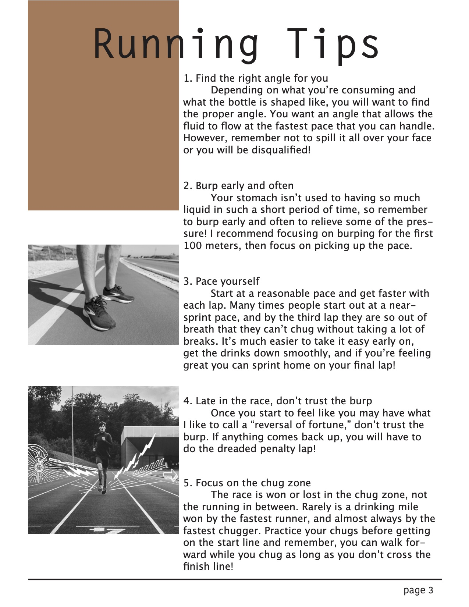
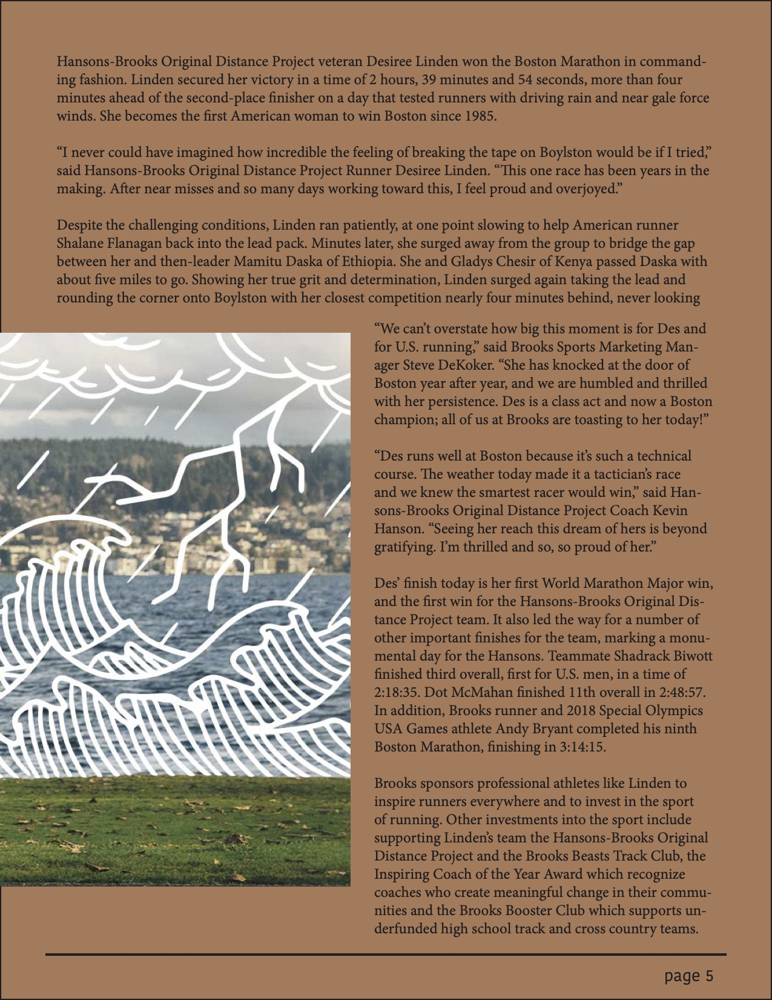
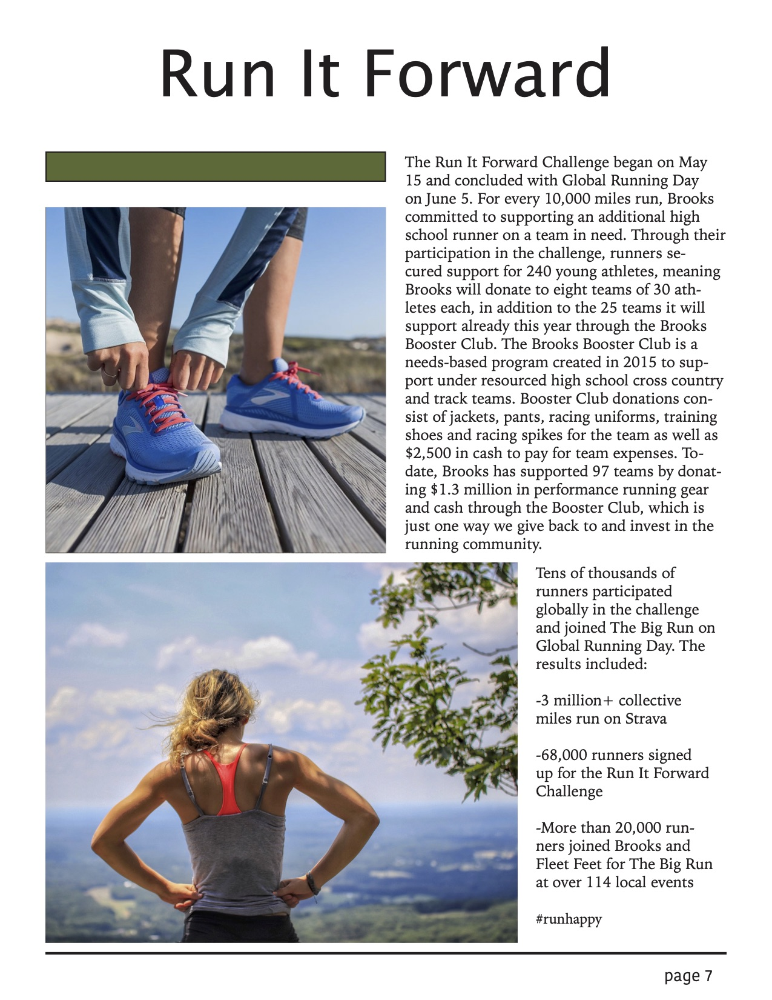
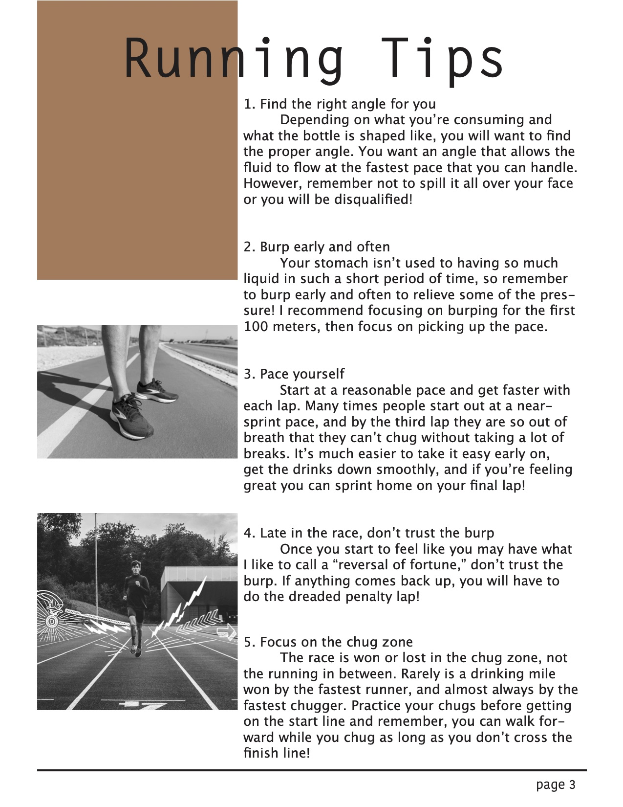
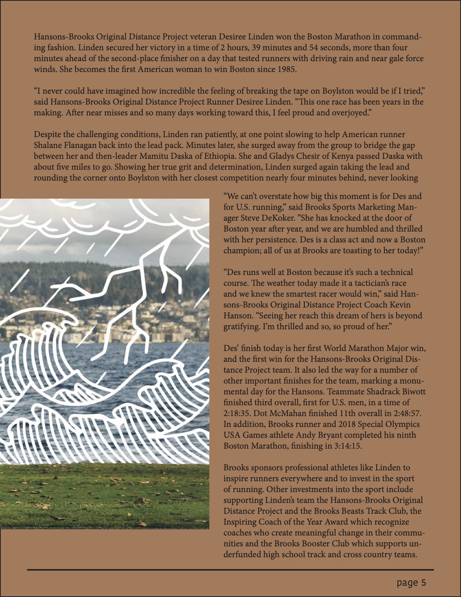
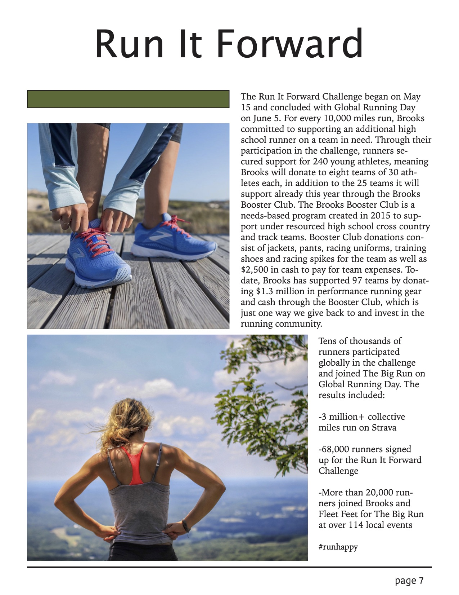

Magazines create multiple purposes for entertianment, sales, communication, knowledge and more. I wanted to take one of my favorite activities, running, and create a magazine to represent the running world. In this magazine for Brooks running company I used information from the Brooks blog to help communicate to audiences.
This type of work engages my organization and design aspect of communication to audience efficently, one of my biggest design passions. This work helped to impove my skills in Adobe InDesign, while also allowing to combine colors to make a complete magazine.
 




